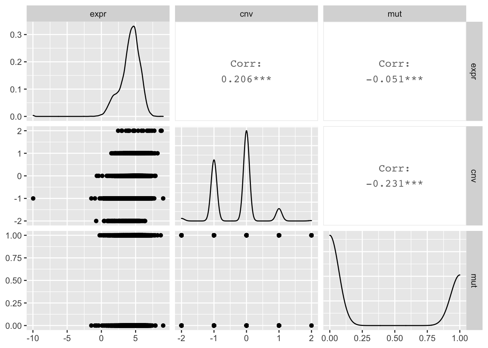

一个函数获取 TCGA/CCLE 单基因分子数据
王诗翔 · 2020-09-26
这篇文章很久之前就想写了，但一直因为一些事情拖延了。
在开发 UCSCXenaShiny 的基础上，我将其中支持的 UCSCXena TCGA/CCLE 单基因数据下载函数进行了整理，构建了一个单一的入口。这样即使用户无需加载 Shiny，也能够简单自在的下载 癌症单基因数据了。
这里单独说的 TCGA 不太全面，实际包含了 TCGA TARGET GTEx 3 个数据库，它们是个体水平的数据。而 CCLE 是细胞水平数据。
下载安装包
在国内我们统一推荐下载 Gitee 上的包：
remotes::install_git("https://gitee.com/XenaShiny/UCSCXenaShiny")如果你已经安装 CRAN 上的 UCSCXenaShiny，也需要进行上面的操作，否则无法使用最新的函数。
参数说明
函数就一个 query_value()。
简单看看有哪些参数：
library(UCSCXenaShiny)
args(query_value)
#> function (identifier, data_type = c("gene", "transcript", "protein",
#> "mutation", "cnv", "methylation"), database = c("toil", "ccle"))
#> NULL非常简单哈，只有 3 个：
- 第 1 个是基因名/蛋白名等。
- 第 2 个是数据的类型，包括基因表达（gene），转录本表达（transcript）、突变（mutation）、拷贝数变异（cnv）和甲基化（methylation），默认是基因表达。
- 第 3 个是数据库，包括 toil（包括上面提到的 TCGA 等几个个体水平数据）和 ccle。
使用
了解函数参数后，使用就根据自己所需就行了。如果还不懂，可以不断试错。
我们以 TP53 基因为例下载一些数据看看。
gene_expr <- query_value("TP53")
#> Running mode: client
#> =========================================================================================
#> UCSCXenaTools version 1.3.3
#> Project URL: https://github.com/ropensci/UCSCXenaTools
#> Usages: https://cran.r-project.org/web/packages/UCSCXenaTools/vignettes/USCSXenaTools.html
#>
#> If you use it in published research, please cite:
#> Wang et al., (2019). The UCSCXenaTools R package: a toolkit for accessing genomics data
#> from UCSC Xena platform, from cancer multi-omics to single-cell RNA-seq.
#> Journal of Open Source Software, 4(40), 1627, https://doi.org/10.21105/joss.01627
#> =========================================================================================
#> --Enjoy it--
#> Try querying data #1
#> -> Checking if the dataset has probeMap...
#> -> Done. ProbeMap is found.
#> Running mode: client
#> More info about dataset please run following commands:
#> library(UCSCXenaTools)
#> XenaGenerate(subset = XenaDatasets == "TcgaTargetGtex_rsem_gene_tpm") %>% XenaBrowse()这个返回结果的结构：
str(gene_expr)
#> List of 2
#> $ expression: Named num [1:19131] 4.79 5.89 5.52 4.43 2.38 ...
#> ..- attr(*, "names")= chr [1:19131] "GTEX-S4Q7-0003-SM-3NM8M" "TCGA-19-1787-01" "TCGA-S9-A7J2-01" "GTEX-QV31-1626-SM-2S1QC" ...
#> $ unit : chr "log2(tpm+0.001)"可以查看部分数据：
gene_expr$expression[1:5]
#> GTEX-S4Q7-0003-SM-3NM8M TCGA-19-1787-01 TCGA-S9-A7J2-01
#> 4.79 5.89 5.52
#> GTEX-QV31-1626-SM-2S1QC TCGA-G3-A3CH-11
#> 4.43 2.38有了这个数据就可以结合病人的各种表型去做分析啦。
我们再看下它的 CNV 和 突变情况。
# CNV
gene_cnv <- query_value("TP53", data_type = "cnv")
#> Running mode: client
#> Try querying data #1
#> -> Checking if the dataset has probeMap...
#> -> Done. No probeMap found or error happened, use old way...
#> Running mode: client
#> More info about dataset please run following commands:
#> library(UCSCXenaTools)
#> XenaGenerate(subset = XenaDatasets == "TCGA.PANCAN.sampleMap/Gistic2_CopyNumber_Gistic2_all_thresholded.by_genes") %>% XenaBrowse()
gene_cnv$data[1:5]
#> TCGA-A5-A0GI-01 TCGA-S9-A7J2-01 TCGA-06-0150-01 TCGA-AR-A1AH-01 TCGA-EK-A2RE-01
#> 0 0 0 -1 0
# 突变
gene_mut <- query_value("TP53", data_type = "mutation")
#> More info about dataset please run following commands:
#> library(UCSCXenaTools)
#> XenaGenerate(subset = XenaDatasets == "mc3.v0.2.8.PUBLIC.nonsilentGene.xena") %>% XenaBrowse()
#> Running mode: client
#> Try querying data #1
#> -> Checking if the dataset has probeMap...
#> -> Done. ProbeMap is found.
#> Running mode: client
gene_mut[1:5]
#> TCGA-02-0003-01 TCGA-02-0033-01 TCGA-02-0047-01 TCGA-02-0055-01 TCGA-02-2470-01
#> 1 1 0 1 0简单利用 tidyverse 包，我们可以将几种分子数据整合到一起：
library(tidyverse)
#> ── Attaching packages ──────────────────────────────────────────────────────────── tidyverse 1.3.0 ──
#> ✓ ggplot2 3.3.2 ✓ purrr 0.3.4
#> ✓ tibble 3.0.3 ✓ dplyr 1.0.2
#> ✓ tidyr 1.1.2 ✓ stringr 1.4.0
#> ✓ readr 1.3.1 ✓ forcats 0.5.0
#> ── Conflicts ─────────────────────────────────────────────────────────────── tidyverse_conflicts() ──
#> x dplyr::filter() masks stats::filter()
#> x dplyr::lag() masks stats::lag()
expr <- dplyr::tibble(
sample = names(gene_expr$expression),
expr = as.numeric(gene_expr$expression)
)
cnv <- dplyr::tibble(
sample = names(gene_cnv$data),
cnv = as.numeric(gene_cnv$data)
)
mut <- dplyr::tibble(
sample = names(gene_mut),
mut = as.numeric(gene_mut)
)
tp53 <- purrr::reduce(list(expr, cnv, mut), dplyr::full_join, by = "sample")最后简单画个图吧：
GGally::ggpairs(tp53[, -1])
#> Registered S3 method overwritten by 'GGally':
#> method from
#> +.gg ggplot2
#> Warning: Removed 1370 rows containing non-finite values (stat_density).
#> Warning in ggally_statistic(data = data, mapping = mapping, na.rm = na.rm, :
#> Removed 11009 rows containing missing values
#> Warning in ggally_statistic(data = data, mapping = mapping, na.rm = na.rm, :
#> Removed 12038 rows containing missing values
#> Warning: Removed 11009 rows containing missing values (geom_point).
#> Warning: Removed 9656 rows containing non-finite values (stat_density).
#> Warning in ggally_statistic(data = data, mapping = mapping, na.rm = na.rm, :
#> Removed 11608 rows containing missing values
#> Warning: Removed 12038 rows containing missing values (geom_point).
#> Warning: Removed 11608 rows containing missing values (geom_point).
#> Warning: Removed 11397 rows containing non-finite values (stat_density).